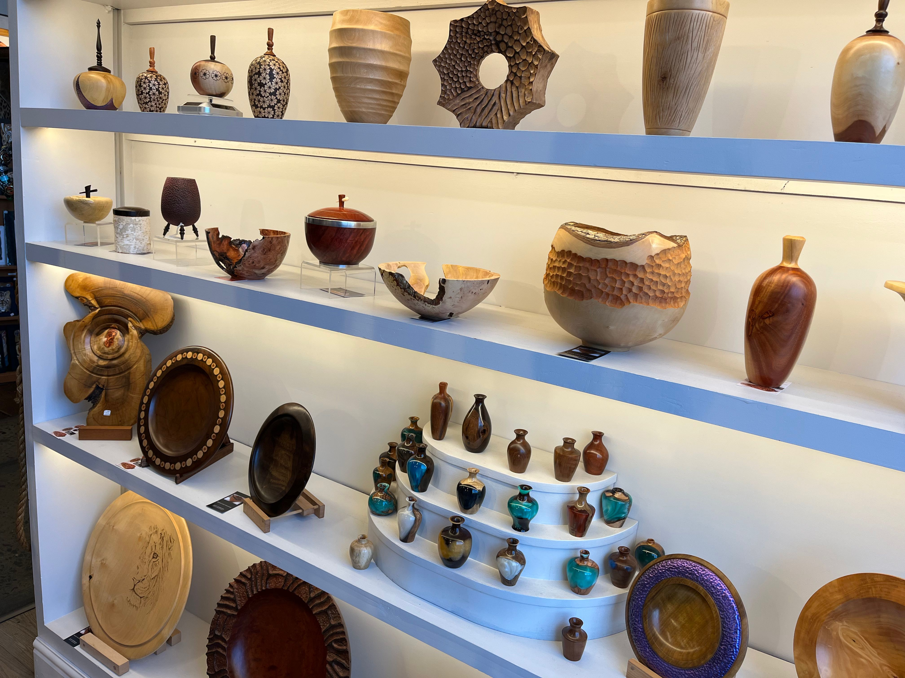
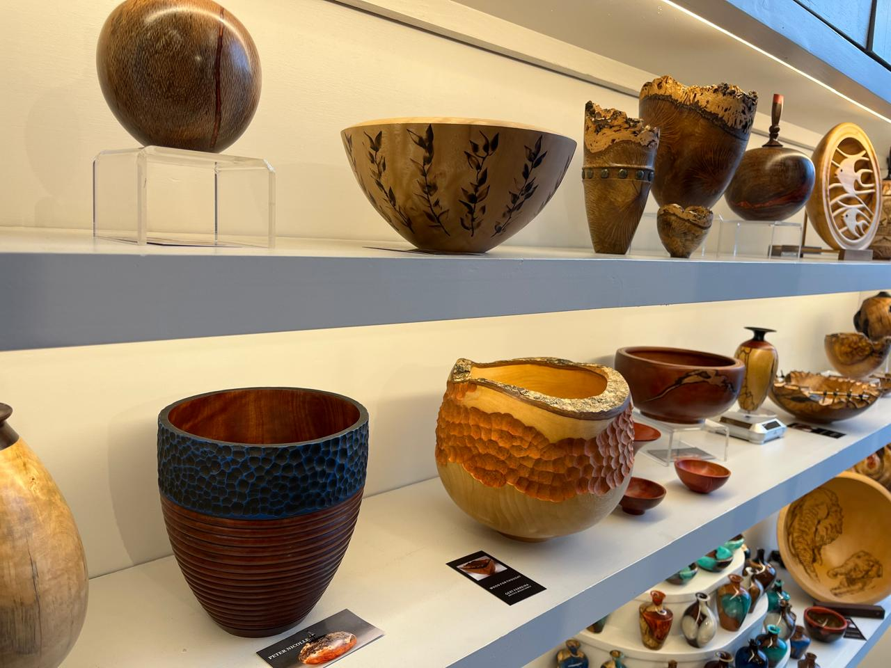
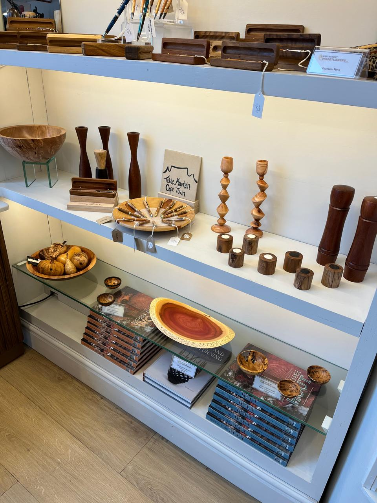

Handcrafted with care, shaped by passion
Explore our collectionHandcrafted with care, shaped by passion
Explore our collection
Our Craft:
At Waterfront Woodturners, we share one common passion — taking a simple piece of wood and transforming it into something beautiful. Each item is carefully turned, finished, and polished by hand, ensuring no two pieces are ever the same.
What We Create
From elegant bowls to sculptural forms, each piece showcases the natural beauty of wood through creative design and skilled craftsmanship.
Our Approach
In a world of mass production, we stand apart. Our work is handmade, sustainable, and designed to be treasured for generations.
Where to Find Us
Visit us at Shop D02 to experience the artistry up close. Our store showcases the finest pieces created by our members.
Who We Are
We are a collective of Cape Town woodturners, united by passion, skill, and a deep respect for the materials we work with.


Gallery
Explore our latest collection of handcrafted wooden pieces — each one turned by hand, each one completely unique.

Meet our Woodturners
Behind every piece lies a story. Get to know the local artisans shaping Cape Town’s finest handcrafted wood art.

Events
Join us for live turning demos, special events, and seasonal exhibitions at the V&A Waterfront and beyond.